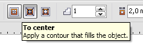

Собственно высказываемся, чего бы хотелось увидеть в CorelDRAW X6. :)
Sinto / 27.05.2010, 12:44
Sinto, а каким боком ваш вопрос относится к теме "Сбор пожеланий для CorelDRAW X6"?
Ну в смысле хотелось, чтобы исправили :)
Добавлено (27.05.2010, 12:44) --------------------------------------------- Ну просто геометрия кореловской спирали безобразно корявая. Очень хотелось бы как в Люстре что ли... - ровненькую, гладенькую...
aler / 28.05.2010, 18:45
Ещё возникли дополнительные пожелания по работе с Градиентом (продолжение :) ).
15.Градиент (Fountain Fill) не мешало бы сделать намного гибче и функциональней. Для сравнения как он работает в Photoshop (PS), в Cinema 4D (C4D) и в Corel X4 (думаю, что в X5 не лучше). - в PS есть дублирование узлов градиента нажатием Alt, в C4D нажатием Ctrl, в Corel никакого дублирования вообще нет (ни в диалоге, ни в интерактиве), что весьма неудобно (может и есть, но я не обнаружил, только "+" на цифр. клаве создаёт новый промежуточный узел) - инверсия в PS происходит сменой угла (Angle), в C4D вообще удобно - через контекстное меню, в Corel только макросом Mirror Fountain Fill, хотя такая элементарная функция должна быть встроена - в PS и C4D все изменения происходят в реальном времени, в Corel в диалоге пока не нажмёшь ОК, то изменений не увидишь; ...кроме того докер Color отказывается работать с узлами градиента в реальном времени - в PS и C4D в диалогах доступны Undo/Redo, Corel такого и не снилось, даже нет сброса.
16.Радиальный градиент в Corel нельзя деформировать (попросту сплющить), а в Illustrator CS4, припоминаю, такая возможность есть.
...Sancho, а все эти пожелания что, реально уйдут в фирму Corel, или это больше для самоутешения?
...Sancho, а все эти пожелания что, реально уйдут в фирму Corel, или это больше для самоутешения?
Не все, а только часть, и я уже говорил это здесь.
milas / 30.05.2010, 09:39
Привет... Работаю с Corel 7-й версии... Работа сделана очень много... Спасибо ребятам из Канады. Отдельное спасибо сайту. Решил я тоже свои пять копеечек внести. 1. Хочется нормального Extrude (при больших размерах теряются ребра). Приходится макет делать 1 к 10 а потом увеличивать 2. Установка размеров Dimensin было лучше в Х3 (стал менее удобным) 3. Что бы можно было редактировать объекты после применения эффектов как в максе. вернуться на уровень ниже, сделать изменения и чтоб эффекты сохранились 4. Ориентация текста по вертикали, почему до сих пор нет? 5. В начале было сказано о кистях. Так вот, что бы можно было создать собственную кисть и применить к объекту, аля Patter brush в люстре. Приходится шаблон для кисти делать в corelе, копировать в illustrator, создавать кисть, пустить по объекту , а объект обратно в корел. 6. Что бы появились аналоги илюстраторовских артбордов. Очень в работе удобны. Ну или что бы страницы или powerclip конвертировались разом в tiff с разными именами (номер Шир х Выс) 7. Можно было делать заливку пересекающихся контуров и при редактировании контуров заливка тоже менялась по форме пересечения. Аналог Live Paint 8. Было ранее написано... в CS5 перспектива.... вещь шикарная... очень много времени экономит в работе. Очень нужна корелу такая фишка. 9. Контур объекта, что бы out, in, center 10. размытие вектора как в inkscape 11. И ноконец появился нормальный браузер cdr/cmx/eps файлов для замены бридж. Конечно может быть в Х6 и не появятся все наши пожелания может в Х7 будет все это?
Black / 30.05.2010, 16:17
milas, 9 - есть! 11 - есть в Х5!
milas / 30.05.2010, 17:11
пункт 9 покажите мне в Х5... видимо не так ищу или по привычке не там :)
Black / 30.05.2010, 17:25
Инструмент Интерактивный контур. Вот его свойства:
Добавлено (30.05.2010, 17:37) --------------------------------------------- а как браузер называется в corel?
Black / 30.05.2010, 17:53
Ну мсье, будьте точны в своих изъяснениях. К тому же зачем это для обводки, если есть контуры...
Просмотровщик, и не только -- Corel CONNECT
milas / 30.05.2010, 18:31
виноват... исправлюсь... contour не всегда корректно работает... и не удобно это каждый раз увеличивать или уменьшать... работу тормозит... а тут нажал F12 и вуаля... в общем... удобно все это....
Ну в смысле хотелось, чтобы исправили :)
Добавлено (27.05.2010, 12:44)
---------------------------------------------
Ну просто геометрия кореловской спирали безобразно корявая. Очень хотелось бы как в Люстре что ли... - ровненькую, гладенькую...
15.Градиент (Fountain Fill) не мешало бы сделать намного гибче и функциональней.
Для сравнения как он работает в Photoshop (PS), в Cinema 4D (C4D) и в Corel X4 (думаю, что в X5 не лучше).
- в PS есть дублирование узлов градиента нажатием Alt, в C4D нажатием Ctrl, в Corel никакого дублирования вообще нет (ни в диалоге, ни в интерактиве), что весьма неудобно (может и есть, но я не обнаружил, только "+" на цифр. клаве создаёт новый промежуточный узел)
- инверсия в PS происходит сменой угла (Angle), в C4D вообще удобно - через контекстное меню, в Corel только макросом Mirror Fountain Fill, хотя такая элементарная функция должна быть встроена
- в PS и C4D все изменения происходят в реальном времени, в Corel в диалоге пока не нажмёшь ОК, то изменений не увидишь;
...кроме того докер Color отказывается работать с узлами градиента в реальном времени
- в PS и C4D в диалогах доступны Undo/Redo, Corel такого и не снилось, даже нет сброса.
16.Радиальный градиент в Corel нельзя деформировать (попросту сплющить), а в Illustrator CS4, припоминаю, такая возможность есть.
...Sancho, а все эти пожелания что, реально уйдут в фирму Corel, или это больше для самоутешения?
Не все, а только часть, и я уже говорил это здесь.
1. Хочется нормального Extrude (при больших размерах теряются ребра). Приходится макет делать 1 к 10 а потом увеличивать
2. Установка размеров Dimensin было лучше в Х3 (стал менее удобным)
3. Что бы можно было редактировать объекты после применения эффектов
как в максе. вернуться на уровень ниже, сделать изменения и чтоб эффекты сохранились
4. Ориентация текста по вертикали, почему до сих пор нет?
5. В начале было сказано о кистях. Так вот, что бы можно было создать собственную кисть и применить к объекту, аля Patter brush в люстре.
Приходится шаблон для кисти делать в corelе, копировать в illustrator, создавать кисть, пустить по объекту , а объект обратно в корел.
6. Что бы появились аналоги илюстраторовских артбордов. Очень в работе удобны.
Ну или что бы страницы или powerclip конвертировались разом в tiff с разными именами (номер Шир х Выс)
7. Можно было делать заливку пересекающихся контуров и при редактировании контуров заливка тоже менялась по форме пересечения. Аналог Live Paint
8. Было ранее написано... в CS5 перспектива.... вещь шикарная... очень много времени экономит в работе. Очень нужна корелу такая фишка.
9. Контур объекта, что бы out, in, center
10. размытие вектора как в inkscape
11. И ноконец появился нормальный браузер cdr/cmx/eps файлов для замены бридж.
Конечно может быть в Х6 и не появятся все наши пожелания может в Х7 будет все это?
Вот его свойства:

Добавлено (30.05.2010, 17:37)
---------------------------------------------
а как браузер называется в corel?
Просмотровщик, и не только -- Corel CONNECT
Страницы